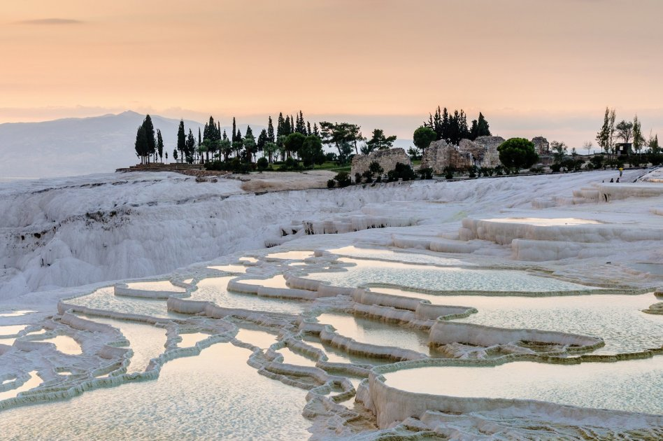

<h2>1. Памуккале, Турция</h2>
Памуккале – стабильно присутствует в многочисленных рейтингах самых красивых мест на Земле и это абсолютно заслуженно. Это ряд термальных источников, причудливым образом высекших «ступени» в белоснежном известняковом склоне. Сегодня сюда приезжают не только путешественники, желающие посмотреть на чудо природы, но и те, чьей целью является оздоровление, и они с удовольствием погружаются в неглубокие травертины. Есть на территории комплекса и более глубокая купель – бассейн Клеопатры. По легенде, сама Клеопатра захаживала сюда, чтобы расслабиться и омолодиться.
</br>
Вода в бассейне Клеопатры газированная и поступает из термальных источников из-за чего создается ощущение будто купаешься в огромной ванне шампанского. Помимо приятных ощущений купание подарит еще и пользу – вода насыщена радоном, минаралами и обладает целебными свойствами.
</br>

</br>
Находится достопримечательность в отдалении от туристических центров, поэтому, отправляясь сюда из ближайшего курортного города, нужно быть готовым к продолжительной поездке. К слову, хрупкие стенки известняковых травертин чувствительны к повреждениям, и по многим из них ходить запрещено. Для того, чтобы пройтись по остальным, придется снять обувь. За соблюдением этого правила внимательно следит охрана.
</br>


